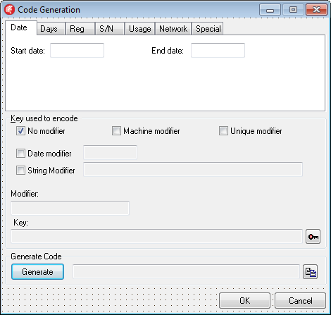
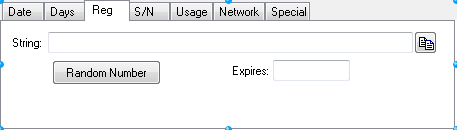
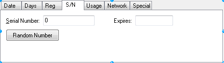

Execute method
function TOgMakeCodes.Execute : Boolean;

Contents
 Execute displays the Code Generation dialog.
Execute displays the Code Generation dialog.
Use this method to display the Code Generation dialog so that a release code can be generated.
If Execute returns True, the Code and CodeType properties contain valid values. Otherwise, the contents of these properties is unknown.



